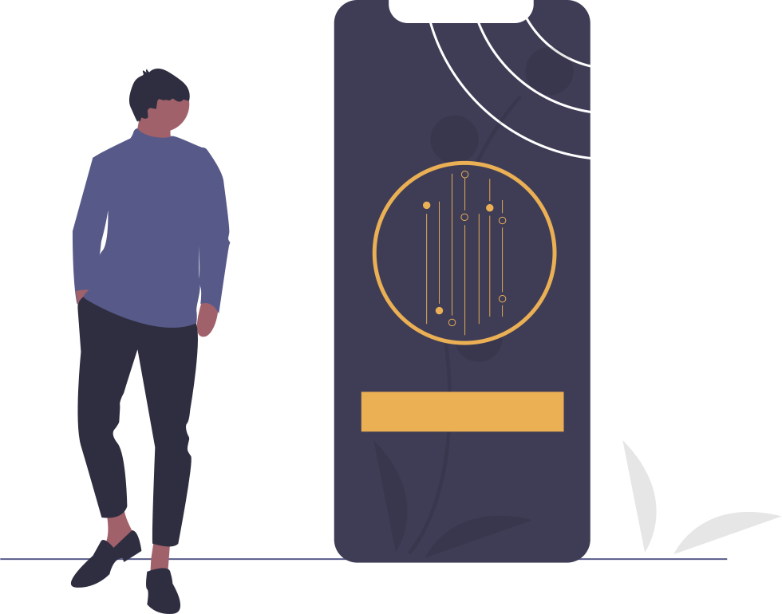

Refreshable Graphics Display
A Refreshable Graphics Display is an Interactive Tactile Graphics Display which provides non-visual access to any form of graphical information such as charts, drawings, flowcharts, floorplans, images and photographs, through an array of moving pins. It also features a touch interface to enable the user to “draw” on the display; tracing a shape with a fingertip raises the pins along the path traced.
